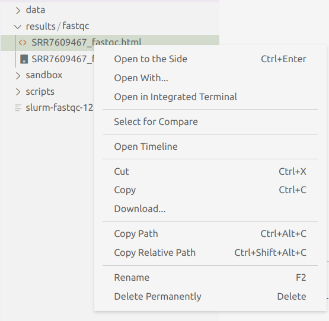

fastqc <fastq-file>Batch Jobs in Practice
Practical examples of writing shell scripts and running them as batch jobs at OSC
So far, we have covered all the building blocks to be able to run command-line programs at OSC:
- Basics of a supercomputer and of OSC specifically
- Bash shell basics to work at a supercomputer, and learn the language used in our scripts
- The bells and whistles needed to turn our commands into a shell script
- Loading and installing the software (command-line programs) that we want to run
- Working with the Slurm job scheduler, so we can submit scripts as batch jobs
- The ability to loop over commands, so that we can submit many scripts at once
With these skills, it’s relatively straightforward to create and submit scripts to run most command-line programs that can analyze our genomics data.
Of course, how straightforward this exactly is depends on the ease of use of the programs you need to run, but that will be true in general whenever you learn a new approach and the associated software.
1 Setup
Starting a VS Code session with an active terminal (click here)
Log in to OSC at https://ondemand.osc.edu.
In the blue top bar, select
Interactive Appsand thenCode Server.In the form that appears:
- Enter
4or more in the boxNumber of hours - To avoid having to switch folders within VS Code, enter
/fs/ess/scratch/PAS2250/participants/<your-folder>in the boxWorking Directory(replace<your-folder>by the actual name of your folder). - Click
Launch.
- Enter
On the next page, once the top bar of the box is green and says
Runnning, clickConnect to VS Code.Open a terminal: =>
Terminal=>New Terminal.In the terminal, type
bashand press Enter.Type
pwdin the termain to check you are in/fs/ess/scratch/PAS2250.If not, click =>
File=>Open Folderand enter/fs/ess/scratch/PAS2250/<your-folder>.
2 Worked example, part I: A script to run FastQC
2.1 FastQC: A program for quality control of FASTQ files
FastQC is perhaps the most ubiquitous genomics software. It produces visualizations and assessments of FASTQ files for statistics such as per-base quality (below) and adapter content. Running FastQC should, at least for Illumina data, almost always be the first analysis step after receiving your sequences.
For each FASTQ file, FastQC outputs an HTML file that you can open in your browser and which has about a dozen graphs showing different QC metrics. The most important one is the per-base quality score graph shown below.
A FastQC quality score graph for decent-quality reads

A FastQC quality score graph for poor-quality reads

2.2 FastQC syntax
To analyze one optionally gzipped FASTQ file with FastQC, the syntax is simply:
Or if we wanted to specify the output directory (otherwise, output files end up in the current working directory):
fastqc --outdir=<output-dir> <fastq-file>For instance, if we wanted output files to go to the directory results/fastqc and wanted the program to analyze the file data/fastq/SRR7609467.fastq.gz, a functional command would like like this:
fastqc --outdir=results/fastqc data/fastq/SRR7609467.fastq.gz
FastQC’s output file names are automatically determined
We can specify the output directory, but not the actual file names, which will be automatically determined by FastQC based on the input file name.
For one FASTQ file, it will output one HTML file and one ZIP archive. The latter contains files with the summary statistics that were computed and on which the figures are based — we generally don’t need to look at that.
2.3 A basic FastQC script
Here is what a basic script to run FastQC could look like:
#!/bin/bash
## Bash strict settings
set -euo pipefail
## Copy the placeholder variables
input_file="$1"
output_dir="$2"
## Run FastQC
fastqc --outdir="$output_dir" "$input_file"But we’ll add a few things to to run this script smoothly as a batch job at OSC:
We load the relevant OSC module:
module load fastqc/0.11.8We add a few
sbatchoptions:#SBATCH --account=PAS2250 #SBATCH --output=slurm-fastqc-%j.out
We’ll also add a few echo statements to report what’s going on, and use a trick we haven’t yet seen — creating the output directory but only if it doesn’t yet exist:
mkdir -p "$output_dir"
The
-p option for mkdir
Using the -p option does two things at once for us, both of which are necessary for a foolproof inclusion of this command in a script:
It will enable
mkdirto create multiple levels of directories at once: by default,mkdirerrors out if the parent directory/directories of the specified directory don’t yet exist.mkdir newdir1/newdir2 #> mkdir: cannot create directory ‘newdir1/newdir2’: No such file or directorymkdir -p newdir1/newdir2 # This successfully creates both directoriesIf the directory already exists, it won’t do anything and won’t return an error (which would lead the script to abort at that point with our
setsettings).mkdir newdir1/newdir2 #> mkdir: cannot create directory ‘newdir1/newdir2’: File existsmkdir -p newdir1/newdir2 # This does nothing since the dirs already exist
Our script now looks as follows:
Click here to see the script
#!/bin/bash
#SBATCH --account=PAS2250
#SBATCH --output=slurm-fastqc-%j.out
## Bash strict settings
set -euo pipefail
## Load the software
module load fastqc
## Copy the placeholder variables
input_file="$1"
output_dir="$2"
## Initial reporting
echo "Starting FastQC script"
date
echo "Input FASTQ file: $input_file"
echo "Output dir: $output_dir"
echo
## Create the output dir if needed
mkdir -p "$output_dir"
## Run FastQC
fastqc --outdir="$output_dir" "$input_file"
## Final reporting
echo
echo "Listing output files:"
ls -lh "$output_dir"
echo
echo "Done with FastQC script"
dateNotice that this script is very similar to our toy scripts from yesterday and today: mostly standard (“boilerplate”) code with just a single command to run our program of interest.
Therefore, you can adopt this script as a template for scripts that run other command-line programs, and will generally only need minor modifications!
Keep your scripts simple – use one program in a script
In general, it is a good idea to keep your scripts simple and run one program per script.
Once you get the hang of it, it may seem appealing to string a number of programs together in a single script, so that it’s easier to rerun everything — but that will often end up leading to more difficulties than convenience.
To really tie your full set of analyses together in an actual workflow / pipeline, you will want to start using a workflow management system like Snakemake or NextFlow.
2.4 Submitting our FastQC script as a batch job
Open a new file in VS Code ( => File => New File) and save it as fastqc.sh within your scripts/ directory. Paste in the code above and save the file.
Then, we submit the script:
sbatch scripts/fastqc.sh data/fastq/SRR7609467.fastq.gz results/fastqcSubmitted batch job 12521308
Once again: Where does our output go?
Output that would have been printed to screen if we had run the script directly: in the Slurm log file
slurm-fastqc-<job-nr>.outFastQC’s main output files (HTML ZIP): to the output directory we specified.
Let’s take a look at the queue:
squeue -u $USER
# Fri Aug 19 10:38:16 2022
# JOBID PARTITION NAME USER STATE TIME TIME_LIMI NODES NODELIST(REASON)
# 12521308 serial-40 fastqc.s jelmer PENDING 0:00 1:00:00 1 (None)Once it’s no longer in the list produced by squeue, it’s done. Then, let’s check the Slurm log file1:
cat slurm-fastqc-12521308.out # You'll have a different number in the file name
Click to see the contents of the Slurm log file
cat misc/slurm-fastqc-12521308.out # You'll have a different number in the file nameStarting FastQC script
Fri Aug 19 10:39:52 EDT 2022
Input FASTQ file: data/fastq/SRR7609467.fastq.gz
Output dir: results/fastqc
Started analysis of SRR7609467.fastq.gz
Approx 5% complete for SRR7609467.fastq.gz
Approx 10% complete for SRR7609467.fastq.gz
Approx 15% complete for SRR7609467.fastq.gz
Approx 20% complete for SRR7609467.fastq.gz
Approx 25% complete for SRR7609467.fastq.gz
Approx 30% complete for SRR7609467.fastq.gz
Approx 35% complete for SRR7609467.fastq.gz
Approx 40% complete for SRR7609467.fastq.gz
Approx 45% complete for SRR7609467.fastq.gz
Approx 50% complete for SRR7609467.fastq.gz
Approx 55% complete for SRR7609467.fastq.gz
Approx 60% complete for SRR7609467.fastq.gz
Approx 65% complete for SRR7609467.fastq.gz
Approx 70% complete for SRR7609467.fastq.gz
Approx 75% complete for SRR7609467.fastq.gz
Approx 80% complete for SRR7609467.fastq.gz
Approx 85% complete for SRR7609467.fastq.gz
Approx 90% complete for SRR7609467.fastq.gz
Approx 95% complete for SRR7609467.fastq.gz
Analysis complete for SRR7609467.fastq.gz
Listing output files:
total 16K
-rw-r--r-- 1 jelmer PAS0471 224K Aug 19 10:39 SRR7609467_fastqc.html
-rw-r--r-- 1 jelmer PAS0471 233K Aug 19 10:39 SRR7609467_fastqc.zip
Done with FastQC script
Fri Aug 19 10:39:58 EDT 2022Our script already listed the output files, but let’s take a look at those too, and do so in the VS Code file browser in the side bar. To actually view FastQC’s HTML output file, we unfortunately need to download it with this older version of VS Code that’s installed at OSC — but the ability to download files from here is a nice one!

3 Worked example, part II: A loop in a workflow script
3.1 A “workflow” file
So far, we’ve been typing our commands to run or submit scripts directly in the terminal. But it’s better to directly save these sorts of commands.
Therefore, we will now create a new file for the purpose of documenting the steps that we are taking, and the scripts that we are submitting. You can think of this file as your analysis lab notebook2.
It’s easiest to also save this as a shell script (.sh) extension, even though it is not at all like the other scripts we’ve made, which are meant to be run/submitted in their entirety.
Not like the other scripts
Once we’ve added multiple batch job steps, and the input of say step 2 depends on the output of step 1, we won’t be able to just run the script as is. This is because all the jobs would then be submitted at the same time, and step 2 would likely start running before step 1 is finished.
There are some possibilities with sbatch to make batch jobs wait on each other (e.g. the --dependency option), but this gets tricky quickly. As also mentioned above, if you want a fully automatically rerunnable workflow / pipeline, you should consider using a workflow management system like Snakemake or NextFlow.
So let’s go ahead and open a new text file, and save it as workflow.sh.
3.2 Looping over all our files
The script that we wrote above will run FastQC for a single FASTQ file. Now, we will write a loop that iterates over all of our FASTQ files (only 8 in this case, but could be 100s just the same), and submits a batch job for each of them.
Let’s type the following into our workflow.sh script, and then copy-and-paste it into the terminal to run the loop:
for fastq_file in data/fastq/*fastq.gz; do
sbatch scripts/fastqc.sh "$fastq_file" results/fastqc
doneSubmitted batch job 2451089
Submitted batch job 2451090
Submitted batch job 2451091
Submitted batch job 2451092
Submitted batch job 2451093
Submitted batch job 2451094
Submitted batch job 2451095
Submitted batch job 2451096
On Your Own: Check if everything went well
Use
squeueto monitor your jobs.Take a look at the Slurm log files while the jobs are running and/or after the jobs are finished. A nice trick when you have many log files to check, is to use
tailwith a wildcard:tail slurm-fastqc*Take a look at the FastQC output files: are you seeing 12 HTML files?
4 Adapting our scripting workflow to run other command-line programs
On Your Own: Run another program
Using the techniques you’ve learned in this workshop, and especially, using our FastQC script as a template, try to run another command-line genomics program.
We below, we provide basically complete command-lines for three programs: MultiQC (summarizing FastQC output into one file), Trimmomatic (quality trimming and removing adapaters), and STAR (mapping files to a reference genome).
You can also try another program that you’ve been wanting to use.
Commands to load/install and run other software:
4.1 MultiQC
MultiQC is a very useful program that can summarize QC and logging output from many other programs, such as FastQC, trimming software and read mapping software.
That means if you have sequenced 50 samples with paired-end reads, you don’t need to wade through 100 FASTQ HTML files to see if each is of decent quality — MultiQC will summarize all that output in nice, interactive figures in a single HTML file!
Here, we’ll assume you want to run it on the FastQC output, which simply means using your FastQC output directory as the input directory for MultiQC.
Install
MultiQC needs to be installed using an unusual 2-3 step procedure (one of the very few programs that can’t be installed in one go with conda):
conda create -n multiqc python=3.7
source activate multiqc
conda install -c bioconda -c conda-forge multiqc
Failed to install? Using other people’s conda environments
If your MultiQC installation fails (this is a tricky one, with very many dependencies!), you can also use mine, by putting these line in your script:
module load miniconda3
source activate /fs/project/PAS0471/jelmer/conda/multiqc-1.12Run
You would run MultiQC once for all files (no loop!) and with FastQC output as your input, as follows:
# Copy the placeholder variables
input_dir=$1 # Directory where your FastQC output is stored
output_dir=$2 # Output dir of your choosing, e.g. result/multiqc
# Activate the conda environment
module load miniconda3
source activate multiqc
# Run MultiQC
multiqc "$input_dir" -o "$output_dir"4.2 Trimmomatic
Trimmomatic is a commonly-used program to both quality-trim FASTQ data and to remove adapters from the sequences.
Load the OSC module
module load trimmomatic/0.38Run
To run Trimmomatic for one FASTQ file (=> loop needed like with FastQC):
# Load the module
module load trimmomatic/0.38
# Copy the placeholder variables
input_fastq=$1 # One of our "raw" FASTQ files in data/fastq
output_fastq=$2 # Output file directory and name to your choosing
# We provide you with a file that has all common Illumina adapters:
adapter_file=/fs/ess/scratch/PAS2250/jelmer/mcic-scripts/trim/adapters.fa
# Run Trimmomatic
# (note that the OSC module makes the environment variable $TRIMMOMATIC available)
java -jar "$TRIMMOMATIC" SE \
"$input_fastq" "$output_fastq" \
ILLUMINACLIP:"$adapter_file":2:30:10 \
LEADING:3 TRAILING:3 SLIDINGWINDOW:4:15 MINLEN:36
Avoid long lines with
\
The \ in the Trimmomatic command above simply allow us to continue a single command one a new line, so we don’t get extremely long lines!
4.3 STAR
4.3.1 Load the OSC module
module load gnu/10.3.0
module load star/2.7.9a4.3.2 Index the genome
First, we need to unzip the FASTA reference genome file:
gunzip reference/Pvul.fa.gz#SBATCH --cpus-per-task=8
# Load the module
module load gnu/10.3.0
module load star/2.7.9a
# Copy the placeholder variables
reference_fasta=$1 # Pvul.fa reference genome FASTA file
index_dir=$2 # Output dir with the genome index
# Run STAR to index the reference genome
STAR --runMode genomeGenerate \
--genomeDir "$index_dir" \
--genomeFastaFiles "$reference_fasta" \
--runThreadN "$SLURM_CPUS_PER_TASK"4.3.3 Map
#SBATCH --cpus-per-task=8
# Load the module
module load star/2.7.9a
# Copy the placeholder variables
fastq_file=$1 # A FASTQ file to map to the reference genome
index_dir=$2 # Dir with the genome index (created in indexing script)
# Extract a sample ID from the filename!
sample_id=$(basename "$fastq_file" .fastq.gz)
# Run STAR to map the FASTQ file
STAR \
--runThreadN "$SLURM_CPUS_PER_TASK" \
--genomeDir "$index_dir" \
--readFilesIn $fastq_file \
--readFilesCommand zcat \
--outFileNamePrefix "$outdir"/"$sample_id" \
--outSAMtype BAM Unsorted SortedByCoordinate
Keyboard shortcut to run shell commands from the editor
To add a keyboard shortcut that will send code selected in the editor pane to the terminal (such that you don’t have to copy and paste):
Click the (bottom-left) =>
Keyboard Shortcuts.Find
Terminal: Run Selected Text in Active Terminal, click on it, then add a shortcut, e.g. Ctrl+Enter.